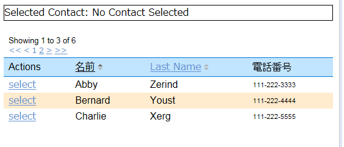

Wicket DataTable ソート列 アクション列 サンプル
この内容はApache Wicketサイトのexamplesに掲載されているRepeater View ExamplesのDataTable
Exampleを簡素化したものです。
もとのサンプルコードは apache-wicket-7.6.0.zip をダウンロードして取り出しました。
環境
Wicket 7.4.0
Java 7
Windows7
画面イメージ

画面の振る舞い
・selectリンクを押下するとユーザが選択され、名前が上部のSelected Contact: に表示されます。
・「名前」列タイトルをクリックすると名前でソートされます。クリックする度に昇順/降順が切り替わります。
・「名前」列の列名は外部のpropertiesファイルに定議された文字列を使用しています。
・電話番号列はソート不可な列です。この列だけスタイル（文字サイズ）を変えています。
・ページナビゲータが機能します。
・行は交互に色が付きます。
ソースコード
以上